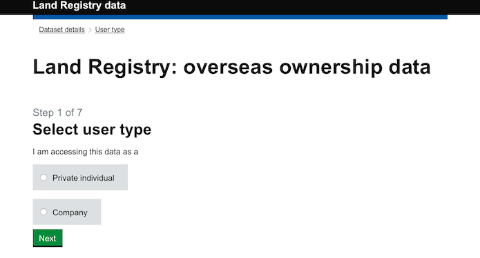
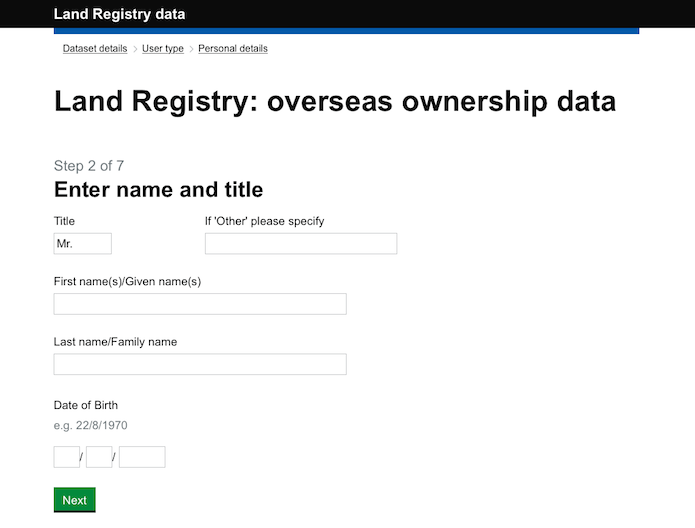
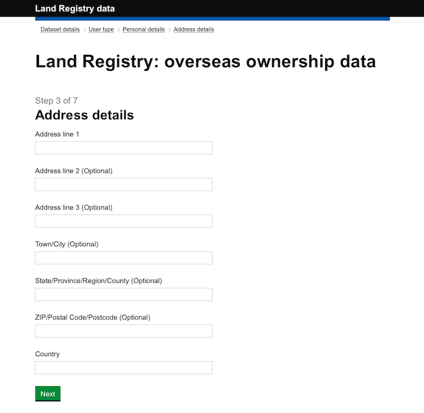
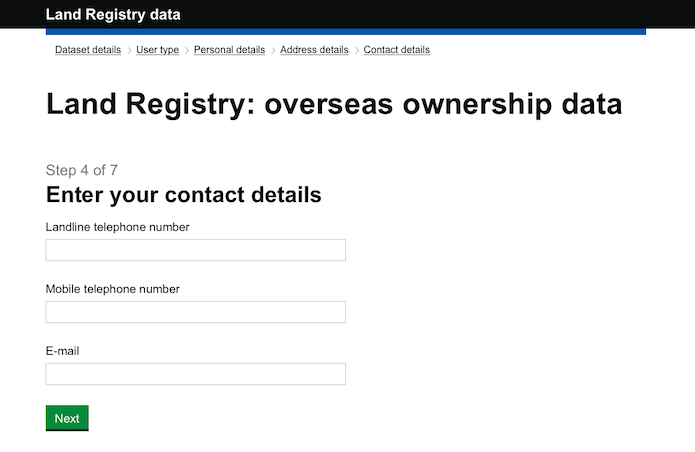
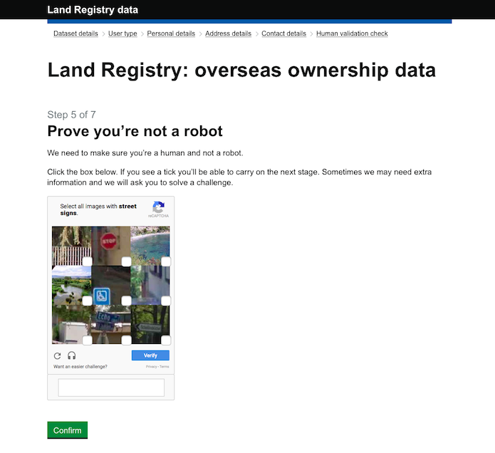
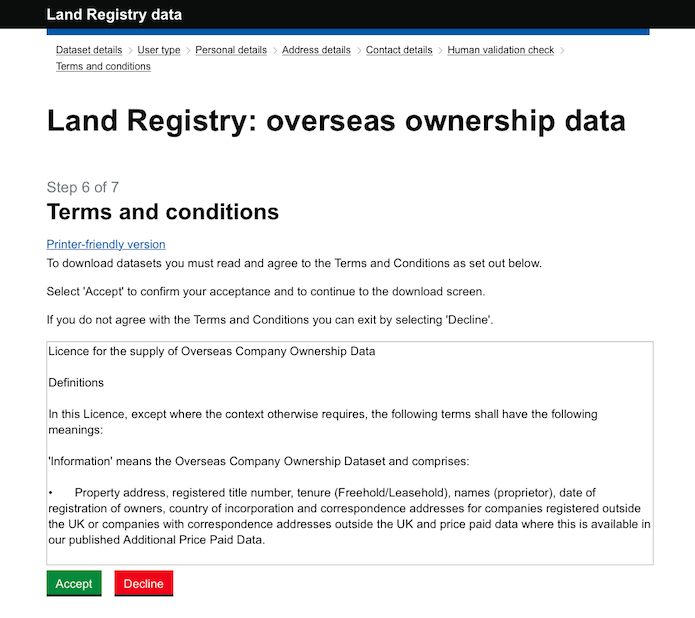

When data is free but not open
The ODI’s Jeni Tennison shares her frustration in trying to access ‘free’ Land Registry property data, and explains that even when data is publicly available and free to access, restrictive licensing makes users' lives harder than it would if it was open

44% of property owned by overseas companies is in Greater London, but to find that statistic is harder than you think. CC BY 2.0, uploaded by Ozzy Delaney.
The Land Registry for England and Wales has published a free dataset of 99,344 properties in the UK that are owned by overseas companies. But accessing the free dataset is tedious, and what you can do with it is restricted because the UK’s address data is not open. The Land Registry is also publishing a chargeable dataset. It is not yet clear what licence the chargeable dataset will be released under but it is likely to be similarly, if not more, restricted.
It’s a very interesting dataset, revealing that 44% of property in the hands of overseas companies is in Greater London, and 5% in Greater Manchester. It shows that 23% of this property is owned by companies registered in the British Virgin Islands, 21% in Jersey, 12% in Guernsey, 11% in the Isle of Man, and only 0.01% in Russia. (It doesn’t reveal how much is owned by private individuals from overseas.)
This free dataset is also interesting as it shows how restrictive licensing on the use of address data makes the lives of data users harder. This data is not open. It is publicly available and free to access, but it cannot be used and shared by everyone. Making data hard to use like this reduces its impact and reduces its value.
When you click to download this data, instead of downloading the data immediately, you’re first asked whether you’re a person or a company:

If you’re a person, you’re asked for your name and date of birth:

Then your full address:

Then two phone numbers and an email address:

Then a captcha (it took me five tries to pass this, but it contributes to Google’s data infrastructure, so that’s OK):

Finally, there are a long set of terms and conditions to agree to:

I won’t replicate these terms and conditions in their entirety here but we have made a copy if you don’t want to go through all the steps to view them. The part that explains why you can’t simply download the data when you click on the original link, why a team of developers had to build a long registration process, why every person who wants to look at this data has to step through six screens of forms and provide personal data to the government, and why I cannot share with you a map of the properties, is this:
We use Ordnance Survey data in the preparation of the property addresses contained within the Information, therefore these licence terms are by agreement with Ordnance Survey. It is a condition of our supplying the Information to you that you have first entered into a Licence with Ordnance Survey for the use and re-use of addresses.
Unsurprisingly, data about properties contains addresses. Ordnance Survey is presumably concerned that the publication of data including 99,344 addresses (out of a total of approximately 35 million) as open data would undermine their business selling licences to AddressBase, their address data product suite. The licence makes it unlawful for anyone to use the addresses in the dataset in particular ways unless they have bought a licence from Ordnance Survey for AddressBase. (In the public sector, this purchase is carried out centrally by the Business, Innovation and Skills department, BIS, and is known as the Public Sector Mapping Agreement, or PSMA.)
The difference between free and open
I wanted to highlight this because it demonstrates the difference between free and open, and the friction that is introduced to all kinds of data publication, access and processing because address data isn’t open.
Currently address data in the UK is not free or open. When data contains addresses, the owners of address data (Royal Mail and Ordnance Survey) get to make the decision about whether that data can be published, and if so under what licence. It is not in Land Registry’s gift to publish data about foreign-owned properties as open data, because it contains addresses. There are other examples: it is not in Surrey County Council’s gift to publish planning data as open data, because it contains addresses and the release of Land Registry Price Paid Data as open data is questionable, because it contains addresses.
As government investigates an open address register, there will be those that say the requirements for open addresses can be met by free developer licences, or free licences for the public sector, or free licences for charities. It is tempting to think of this as a middle path, a satisfactory compromise.
Why all costs reduce impact
But free does not mean open. Even if Land Registry had a free licence to use addresses, they would still have to ensure that the users of data about foreign-owned properties also had a licence to use address data. There would still be seven screens and long terms and conditions before a third party could access it. We as citizens would still have to pick over those T&Cs to see if we could lawfully create and share maps based on the data. Costs are introduced at every stage, and for everybody in the value chain, from publisher to reuser; costs that reduce the impact and value of not just address data but all data that includes addresses.
Free data only reduces friction associated with payment; it does not reduce friction associated with licensing. There can be no half measures. To unlock the value of addresses to our data infrastructure, they must be open.
Jeni Tennison is Technical Director & Deputy CEO at the ODI. Follow @JeniT on Twitter.
If you have ideas or experience in open data that you'd like to share, pitch us a blog or tweet us at @ODIHQ.